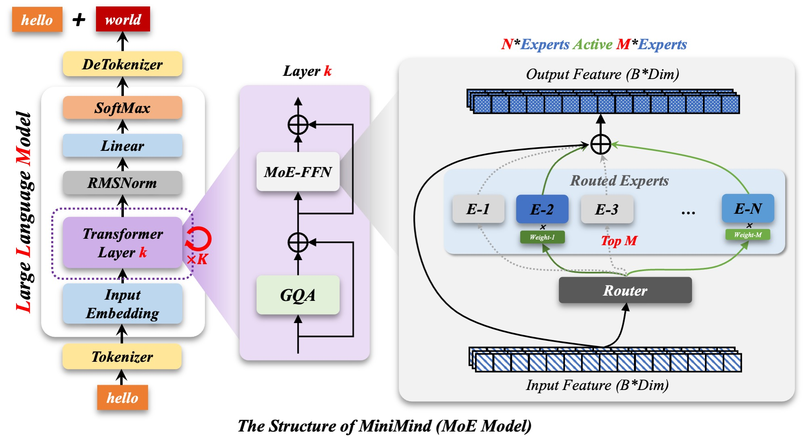

MiniMind 全链路完整指南
从零训练一个 64M 小语言模型，再到强化学习、Agentic RL 与部署 —— 原理、公式、代码与超参的权威参考。
前言：全链路地图与学习路线
MiniMind 是一个用纯 PyTorch 实现的 64M 参数小语言模型，覆盖从词表、模型结构、预训练、SFT、LoRA、DPO、PPO/GRPO、Agentic RL、蒸馏到部署的完整链路。主线 Dense 版仅 64M 参数（约为 GPT-3 的 1/2700）。本指南的运行环境为 4× NVIDIA L20（单卡 48GB），支持 DDP 多卡并行训练。
整条链路与核心代码的对应关系：
| 阶段 | 核心内容 | 对应代码 / 命令 |
|---|---|---|
| 环境 | 克隆仓库、装依赖、确认 GPU | git clone + pip install -r requirements.txt |
| 模型配置 | MiniMindConfig 决定模型规模与参数量 | model/model_minimind.py |
| 分词器 | BPE + ByteLevel、6400 词表 | trainer/train_tokenizer.py |
| 预训练 | 数据准备、训练循环（分布式/混合精度/梯度累积） | dataset/lm_dataset.py、trainer/train_pretrain.py |
| 模型结构 | RMSNorm、RoPE、GQA、SwiGLU、MoE | model/model_minimind.py |
| SFT | 多轮对话模板、损失掩码、LoRA | trainer/train_full_sft.py、train_lora.py |
| 偏好对齐 | RM、DPO | trainer/train_dpo.py |
| 强化学习 | PPO/GRPO、rollout 引擎、同步/异步 | trainer/train_ppo.py、train_grpo.py、rollout_engine.py |
| Agentic RL | 多轮工具调用、RLVR、自适应思考 | trainer/train_agent.py |
| 测试/部署 | 推理、API、模型转换、推理框架 | eval_llm.py、scripts/* |
项目目录结构：
minimind/
├── dataset/ # 数据集加载器（lm_dataset.py）
├── model/ # 模型结构、LoRA 结构、tokenizer 词表
├── trainer/ # 全部训练脚本（pretrain / sft / lora / dpo / ppo / grpo / agent / distillation）
├── scripts/ # 推理与服务（web_demo / serve_openai_api / chat_api / convert_model / eval_toolcall）
├── eval_llm.py # 命令行对话评测入口
├── requirements.txt
└── README.md
所有训练脚本需在trainer/目录下执行（cd trainer），默认数据路径为../dataset/...，输出权重落在../out/。
快速开始：从头训练一遍（4× L20）
如果只想直接上手，从零跑出一个可对话模型，按下面 6 步走。环境为 4× NVIDIA L20，仓库 /home/baifan/luxiang/trainnew/minimind，所有训练脚本都在 trainer/ 目录下执行。
第 0 步：确认环境
cd /home/baifan/luxiang/trainnew/minimind # 进入仓库
conda activate minimind # 激活环境
# 确认 4 张卡都被识别
python -c "import torch; print(torch.__version__, torch.cuda.is_available(), torch.cuda.device_count())"预期输出里 GPU 数量是 4。如果 torch 是 CPU 版或 CUDA 不匹配，先重装对应 CUDA 版本的 torch。
第 1 步：下载数据
mkdir -p dataset # 建数据目录
# 方式 A：ModelScope（国内快，推荐）
pip install modelscope
modelscope download --dataset gongjy/minimind_dataset --local_dir ./dataset快速复现只需要两个文件：pretrain_t2t_mini.jsonl（约 1.2GB）和 sft_t2t_mini.jsonl（约 1.6GB）。确认落地：
ls -lh dataset/*.jsonl第 2 步：预训练 Pretrain
cd trainer # 必须在 trainer/ 下执行
torchrun --nproc_per_node 4 train_pretrain.py # 4 卡 DDP关键默认值：batch_size=32、accumulation_steps=8（真实 batch=256）、learning_rate=5e-4、max_seq_len=340、epochs=2。
预期产物：out/pretrain_768.pth。观察日志 loss 从高往下降、无报错。
想先验证脚本能跑通，可以先小规模 smoke：临时加 --epochs 1 --batch_size 8 --max_seq_len 128，跑几步确认不崩，再正式跑。
第 3 步：SFT 指令微调
cd trainer
torchrun --nproc_per_node 4 train_full_sft.py关键默认值：from_weight=pretrain（基于上一步权重）、learning_rate=1e-5、max_seq_len=768、epochs=2。
预期产物：out/full_sft_768.pth。
SFT 常见报错：Not enough disk space。完整报错是OSError: Not enough disk space. Needed: Unknown size，发生在SFTDataset里调load_dataset('json', ...)。根因通常是 home 目录所在分区配额满了：load_dataset要先把 JSONL 缓存成 Arrow 格式写到~/.cache/huggingface/datasets/，而这个缓存默认在/home上。
排查：
# 看哪个分区满了
df -h
# 重点看 /home 一行：如果 Use%=100%、Avail=0，就是 home 配额满了
# 此时本地盘 / 或 /tmp 通常还有大量空闲（如 2.8T），应把缓存/输出挪过去解决：把 HF 缓存和训练输出都重定向到本地盘 /tmp：
# ① HF 数据集缓存 → /tmp（本地盘，空间大）
export HF_DATASETS_CACHE=/tmp/hf_cache
# ② 输出也放到 /tmp，避免 checkpoint 写到已满的 /home
mkdir -p /tmp/out
cp ~/luxiang/trainnew/minimind/out/pretrain_768.pth /tmp/out/
# ③ 重新跑 SFT，--save_dir 指向 /tmp/out
cd ~/luxiang/trainnew/minimind/trainer
torchrun --nproc_per_node 4 train_full_sft.py --save_dir /tmp/out训练完权重在 /tmp/out/full_sft_768.pth，测试时用 python eval_llm.py --weight full_sft --save_dir /tmp/out（或把权重拷回 out/）。
长期要释放 /home 配额：pip cache purge、conda clean --all、清理旧项目的 out/*.pth 权重和旧数据；大文件可迁到本地盘 /tmp-tini（2.8T）。
第 4 步：测试对话
python eval_llm.py --weight full_sft进去后选 [1] 手动输入，问"介绍一下你自己"，能通顺回答即 SFT 成功。
第 5 步（可选）：进阶路线
# LoRA 领域微调
python train_lora.py --data_path ../dataset/lora_medical.jsonl --from_weight full_sft
# DPO 偏好对齐
python train_dpo.py --from_weight full_sft
# GRPO 强化学习（默认 CISPO，需要奖励模型）
python train_grpo.py --data_path ../dataset/rlaif.jsonl --from_weight full_sft
# Agentic RL 工具调用
python train_agent.py --data_path ../dataset/agent_rl.jsonl这些进阶阶段依赖对应数据（dpo.jsonl、rlaif.jsonl、agent_rl.jsonl），RL 还需要奖励模型 internlm2-1_8b-reward。
奖励模型下载（GRPO / Agentic 必需）。RL 需要 InternLM2-1.8B-Reward（约 3.4GB），放到 minimind 的同级目录：
cd ~/luxiang/trainnew
# 方式 A：modelscope（若下载权重卡住，改用方式 B）
modelscope download --model Shanghai_AI_Laboratory/internlm2-1_8b-reward --local_dir ./internlm2-1_8b-reward
# 方式 B：wget 直连分片（modelscope 卡住时用这个）
cd ~/luxiang/trainnew/internlm2-1_8b-reward
wget -c "https://modelscope.cn/models/Shanghai_AI_Laboratory/internlm2-1_8b-reward/resolve/master/model-00001-of-00002.safetensors" -O model-00001-of-00002.safetensors
wget -c "https://modelscope.cn/models/Shanghai_AI_Laboratory/internlm2-1_8b-reward/resolve/master/model-00002-of-00002.safetensors" -O model-00002-of-00002.safetensors全量数据 + MoE 训练：
# MoE 预训练（全量数据，max_seq_len 用 380）
torchrun --nproc_per_node 4 train_pretrain.py --use_moe 1 --data_path ../dataset/pretrain_t2t.jsonl --max_seq_len 380
# MoE SFT（加载 MoE 预训练权重，脚本自动加 _moe 后缀）
torchrun --nproc_per_node 4 train_full_sft.py --use_moe 1 --data_path ../dataset/sft_t2t.jsonl --from_weight pretrain
# MoE GRPO / Agentic
python train_grpo.py --use_moe 1 --data_path ../dataset/rlaif.jsonl --from_weight full_sft
python train_agent.py --use_moe 1 --data_path ../dataset/agent_rl.jsonl --from_weight full_sft问题记录：① 奖励模型默认相对路径../../internlm2-1_8b-reward在新目录结构下解析到trainnew/internlm2-1_8b-reward，且原目录是空的，导致HFValidationError: Repo id must be...——解决：下载到正确位置，或显式传--reward_model_path绝对路径。②modelscope download下载权重分片会卡住，改用wget -c直连分片 URL。③ MoE 权重带_moe后缀（如pretrain_768_moe.pth），与 Dense 权重不冲突、不覆盖。
第 1 章 环境准备
1.1 克隆仓库与创建环境
git clone --depth 1 https://github.com/jingyaogong/minimind # 浅克隆：只拉最新一次提交
cd minimind # 进入仓库目录
conda create -n minimind python=3.10 -y # 创建隔离的 Python 环境
conda activate minimind # 激活该环境建议 Python 3.10~3.12（web_demo.py 要求 ≥3.10）。
1.2 安装依赖
pip install -r requirements.txt -i https://mirrors.aliyun.com/pypi/simple
torch 在 requirements.txt 中被注释，需要按 CUDA 版本单独安装：
# CUDA 12.1 示例
pip install torch torchvision --index-url https://download.pytorch.org/whl/cu121 # 按 CUDA 版本装 GPU 版
# 仅 CPU
pip install torch torchvision --index-url https://download.pytorch.org/whl/cpu # 无 GPU 时用 CPU 版
1.3 确认 PyTorch 与 GPU
python -c "import torch; print(torch.__version__); print(torch.cuda.is_available()); print(torch.cuda.get_device_name(0))"
三种运行后端：CUDA（推荐，最快）、CPU（能跑通但慢 10 倍以上）、MPS（Apple Silicon，兼容性一般）。
1.4 常见坑
- Windows 下 pyarrow 与 torch 的 DLL 冲突：训练脚本必须在
import torch之前先import datasets。 - WandB 连不上：默认改用 SwanLab（国内可访问，API 兼容 wandb），训练时加
--use_wandb开启。 - 必须在 trainer/ 目录下执行：所有默认路径都以
trainer/为基准。
第 2 章 模型配置与参数量
模型的一切始于 MiniMindConfig（约 40 行），它决定模型多大、长什么样、能看多远、能说多少词。
2.1 关键字段
class MiniMindConfig(PretrainedConfig):
def __init__(self, hidden_size=768, num_hidden_layers=8, use_moe=False, **kwargs):
self.hidden_size = hidden_size # 隐藏维度 d_model
self.num_hidden_layers = num_hidden_layers # Transformer 层数
self.use_moe = use_moe # 是否用 MoE 架构
self.vocab_size = kwargs.get("vocab_size", 6400) # 词表大小
self.bos_token_id = kwargs.get("bos_token_id", 1) # 序列开始 token
self.eos_token_id = kwargs.get("eos_token_id", 2) # 序列结束 token
self.num_attention_heads = kwargs.get("num_attention_heads", 8) # Q 头数
self.num_key_value_heads = kwargs.get("num_key_value_heads", 4) # KV 头数（GQA）
self.head_dim = self.hidden_size // self.num_attention_heads # 96
self.hidden_act = kwargs.get("hidden_act", 'silu') # 激活函数
self.intermediate_size = kwargs.get("intermediate_size", math.ceil(hidden_size * math.pi / 64) * 64) # FFN 中间维度
self.max_position_embeddings = kwargs.get("max_position_embeddings", 32768) # 最大位置数
self.rms_norm_eps = kwargs.get("rms_norm_eps", 1e-6) # RMSNorm 的 eps
self.rope_theta = kwargs.get("rope_theta", 1e6) # RoPE 基频
self.tie_word_embeddings = kwargs.get("tie_word_embeddings", True) # 词嵌入与输出层共享参数
# MoE 专属
self.num_experts = kwargs.get("num_experts", 4) # 专家数
self.num_experts_per_tok = kwargs.get("num_experts_per_tok", 1) # 每 token 激活的专家数
2.2 64M 是怎么算出来的
以 hidden_size=768、8 层、词表 6400、tie_word_embeddings=True 计算：
- 词嵌入：6400 × 768 ≈ 4.9M（与 lm_head 共享，只算一次）；
- 单层 Transformer：注意力 QKV+O 投影 + SwiGLU FFN（gate/up/down），合计约 7.37M；
- 总计：4.9M + 8 × 7.37M ≈ 64M。
FFN 占大头；intermediate_size = ceil(768×π/64)×64 = 2432。GQA（8 Q 头共享 4 组 KV）省 KV Cache；tie_word_embeddings 省 4.9M 参数；MoE 是"总参大、激活小"。
2.3 与 GPT-3 对比
| GPT-3 | MiniMind-3 | 比值 | |
|---|---|---|---|
| 参数量 | 175B | 64M | ≈1/2700 |
| hidden_size | 12288 | 768 | 1/16 |
| 层数 | 96 | 8 | 1/12 |
| 词表 | 50257 | 6400 | ≈1/8 |
参数量差距是数量级的，但结构同构——这正是 MiniMind 作为教学模型的价值。
第 3 章 分词器 Tokenizer
Tokenizer 是文本与 token id 之间的"词典"。MiniMind 用了一个反直觉的小词表方案：6400（对比 Llama 3 的 128000）。
3.1 BPE + ByteLevel
BPE 三步：从字节开始（256 个符号）→ 反复合并最高频相邻对 → 直到词表达到目标大小。频率越高词越整，频率越低拆得越碎。ByteLevel 预切分先把文本转成 utf-8 字节序列，任何字符最终都能用 256 种字节拼出来，因此模型永不遇到 OOV（Out-Of-Vocabulary）。
OOV（词表外）与 UNK（未知占位符）、OOD（分布外）的区别：OOV 是"查无此词"；ByteLevel 通过"用 256 种字节零件拼任何字符"从机制上消灭了 OOV。
3.2 6400 词表布局
| id 范围 | 数量 | 内容 | 用途 |
|---|---|---|---|
| 0 | 1 | <|endoftext|> | 文本结束，兼任 pad / unk |
| 1~2 | 2 | <|im_start|> / <|im_end|> | 对话角色标记（Qwen 风格） |
| 3~20 | 18 | 多模态预留 token | MiniMind-V / -O 预留 |
| 21~26 | 6 | <tool_call>、<tool_response>、<think> 等 | 工具调用 + 思考链 |
| 27~35 | 9 | <|buffer1|> ~ <|buffer9|> | 预留位，加功能不用重训 |
| 36~6399 | 6364 | 普通 BPE 合并符号 | 真正的语言知识 |
3.3 小模型为什么必须配小词表
词表大小直接影响 embedding 层和 lm_head 的参数。以 hidden_size=768 计算：MiniMind 6400 词表 embedding ≈ 4.9M（占 64M 的 7.7%）；Qwen2 的 151643 词表 ≈ 116M——比整个 MiniMind 还大一倍。小模型若用大词表，光 embedding 就超过总参数，参数预算被吃掉。
由此引出一个评测要点：PPL（困惑度）不能跨 tokenizer 比较。PPL 按 token 平均，切得越细分数天然越低，不公平；跨词表应使用 BPB（Bits Per Byte），它按字节平均（文本字节数与词表无关）：
$$\mathrm{BPB} = \frac{H_{\mathrm{token}} \cdot N}{B \cdot \ln 2}$$其中 $N$ 是 token 数、$B$ 是 utf-8 字节数。
3.4 chat_template
词表里有 <|im_start|> / <|im_end|>，chat_template（Jinja2）负责把多轮对话拼成一段话：每个角色用 <|im_start|>{role}\n{content}<|im_end|>\n 包裹，同时支持 reasoning_content、tools、tool_call。训练和推理必须用同一套模板。
官方明确不建议重训 tokenizer：词表一变，数据、权重、推理接口、llama.cpp/vllm/ollama 生态全部不兼容。train_tokenizer.py 仅供学习。
第 4 章 预训练
4.1 预训练数据准备
预训练的本质是"词语接龙"：给模型一段文本，让它预测下一个 token。数据管线把文本切成 (input_ids, labels) 对。数据格式为纯文本流：
{"text": "先秦时期，楚国是南方大国，……"}
{"text": "机器学习是人工智能的一个分支，……"}数据集：pretrain_t2t_mini.jsonl（1.2GB，快速复现）、pretrain_t2t.jsonl（10GB，主线）、sft_t2t_mini.jsonl（1.6GB）、sft_t2t.jsonl（14GB，已混入 Tool Call）、rlaif.jsonl（24MB）、dpo.jsonl（53MB）、agent_rl.jsonl（86MB）、agent_rl_math.jsonl（18MB）。
PretrainDataset 核心逻辑：
def __getitem__(self, index):
tokens = self.tokenizer(str(sample['text']), add_special_tokens=False,
max_length=self.max_length - 2, truncation=True).input_ids # (L,) 原始文本 token
tokens = [self.tokenizer.bos_token_id] + tokens + [self.tokenizer.eos_token_id] # (L+2,)
input_ids = tokens + [self.tokenizer.pad_token_id] * (self.max_length - len(tokens)) # (max_length,) 右侧 pad
labels = input_ids.clone() # (max_length,)
labels[input_ids == self.tokenizer.pad_token_id] = -100 # pad 位置 -100 不参与 loss
return input_ids, labels # 两者都是 (max_length,)labels 和 input_ids 值几乎一样，是因为语言模型的自监督性质：标准答案 = 下一个 token。使用上错位一位，且 labels 的 pad 处改为 -100，所以必须 clone 一份独立修改。
max_seq_len 指 tokens 长度而非字符数：中文约 1.5~1.7 字符/token，英文约 4~5 字符/token。
4.2 预训练脚本关键参数
cd trainer # 训练脚本必须在 trainer/ 目录下执行
python train_pretrain.py # 单卡训练
torchrun --nproc_per_node 2 train_pretrain.py # 双卡 DDP 训练| 参数 | 默认 | 含义 |
|---|---|---|
batch_size | 32 | 每步样本数 |
accumulation_steps | 8 | 梯度累积步数 → 真实 batch = 256 |
learning_rate | 5e-4 | 峰值学习率 |
dtype | bfloat16 | 混合精度类型（老卡用 float16） |
max_seq_len | 340 | 截断长度 |
grad_clip | 1.0 | 梯度裁剪阈值 |
from_resume | 0 | 断点续训开关 |
几个"默认值即决策"的关键点：
batch_size=32+accumulation_steps=8⇒ 真实 batch = 256。显存不够时优先调小 batch_size、调大 accumulation_steps，效果等价；dtype=bfloat16：BF16 动态范围和 FP32 一致，没有梯度下溢问题；老卡不支持 BF16 时改--dtype float16（此时 GradScaler 才真正生效）；max_seq_len=340：mini 数据较短，340 token 足以覆盖；SFT 阶段放宽到 768。
脚本头部与导入顺序。训练脚本总是 cd trainer 后直接执行，所以需要手动把项目根目录加进 sys.path，并保证 import datasets 在 import torch 之前：
__package__ = "trainer" # 脚本被直接执行，手动声明包名
sys.path.append(os.path.abspath(os.path.join(os.path.dirname(__file__), '..'))) # 让 import model/dataset 生效
import datasets # noqa: F401 # Windows 下 pyarrow 与 torch 的 DLL 加载顺序冲突
import torch初始化：分布式、随机种子：
local_rank = init_distributed_mode() # 无 RANK 环境变量 → 单卡返回 0；有则 nccl 初始化进程组
if dist.is_initialized(): args.device = f"cuda:{local_rank}" # 分布式时按 rank 分配 GPU
setup_seed(42 + (dist.get_rank() if dist.is_initialized() else 0)) # 种子 = 42 + rank，各卡可复现种子 = 42 + rank：每张卡数据顺序不同但各自可复现，避免多卡看到完全相同的洗牌结果。
混合精度与可视化：
autocast_ctx = nullcontext() if device_type == "cpu" else torch.cuda.amp.autocast(dtype=dtype)
# CPU 不混合精度；GPU 用 autocast 低精度计算
scaler = torch.cuda.amp.GradScaler(enabled=(args.dtype == 'float16')) # 只有 fp16 才需要 GradScaler
# --use_wandb 实际初始化 SwanLab（import swanlab as wandb），续训时通过 wandb_id 恢复同一条实验autocast 让前向/反向在低精度下计算（省显存、提速），权重本身仍以 FP32 维护；GradScaler 只在 fp16 下启用，bf16 不需要缩放（enabled=False 时 step/update 是无害空操作）。
4.3 训练循环核心
动态学习率（余弦衰减）。峰值学习率从当前步数 $t$ 按余弦衰减到峰值的 10%：
$$\mathrm{lr}(t) = \mathrm{lr} \cdot \left(0.1 + 0.45\left(1 + \cos\!\left(\pi \frac{t}{T}\right)\right)\right)$$其中 $t$ 是当前全局 step，$T$ 是总 step 数。训练初期（$t$ 小，$\cos\approx1$）lr 接近峰值；中期平滑下降；末期（$\cos\approx-1$）降到 $0.1\times$ 峰值。对应代码：
lr = lr * (0.1 + 0.45 * (1 + math.cos(math.pi * current_step / total_steps)))梯度累积：每个微步 loss = loss / accumulation_steps，累积 n 步后求和等价于 batch 扩大 n 倍；梯度裁剪在 scaler.unscale_ 之后。
with autocast_ctx: # 混合精度上下文
res = model(input_ids, labels=labels) # 前向
loss = (res.loss + res.aux_loss) / args.accumulation_steps # 主损失 + 辅助损失，摊到每个微步
scaler.scale(loss).backward() # 反向（梯度暂存，不清零）
if step % args.accumulation_steps == 0: # 凑满 accumulation_steps 才更新
scaler.unscale_(optimizer) # 还原真实梯度
torch.nn.utils.clip_grad_norm_(model.parameters(), args.grad_clip) # 梯度裁剪防爆炸
scaler.step(optimizer) # 参数更新
scaler.update() # 动态调整 fp16 缩放因子
optimizer.zero_grad(set_to_none=True) # 清空梯度（置 None 省显存）step / batch / epoch / 更新次数（刷题类比）。把数据集想象成题库，batch_size 是一套卷子的题数，accumulation_steps 是"攒几套卷子才批改一次"：
| 概念 | 刷题场景 | 数值（默认配置） |
|---|---|---|
| step | 做完一套卷子 | 每个 batch +1 |
| len(loader) | 把题库过一遍需要的卷子数 | 10000 题 ÷ 32 ≈ 313 |
| epoch | 把题库从头到尾做完一遍 | = 313 个 step |
| 优化器更新 | 批改总结（真正"学到东西"） | 每 8 个 step 一次 ≈ 39 次 |
三个最容易混的关系：
- 一个 step = 一个 batch：
for step, (input_ids, labels) in enumerate(loader)每取出一批样本，step 就 +1； - len(loader) = 批次数，不是样本数：
ceil(样本总数 / batch_size)，本 epoch 最后一个 step 就是 len(loader)； - 优化器更新次数 = step 数 ÷ accumulation_steps：日志里 loss 打印 313 次，但参数只动约 39 次——其余时候只是把梯度攒起来，这就是梯度累积的本意。
续训的"偏移"同理：昨天做到第 1000 步断电，今天从 step 1001 接着数（enumerate(loader, start=start_step+1)），而不是从 1 重数——因为 lr 按全局 step 衰减，重数会让学习率倒退到初始状态。
双份保存。每次保存写两份文件：
# 第一份：纯模型权重（fp16、CPU），供推理 / 下一阶段加载
torch.save({k: v.half().cpu() for k, v in state_dict.items()}, ckp)
# 第二份：完整训练状态（模型+优化器+scaler+epoch+step），供断点续训
lm_checkpoint(lm_config, weight=args.save_weight, model=model, optimizer=optimizer,
scaler=scaler, epoch=epoch, step=step, wandb=wandb, save_dir='../checkpoints')第一份只有模型参数，体积小、用于后续推理或下一阶段加载；第二份把优化器状态、scaler 缩放因子、当前 epoch/step 一起存下来，断点续训时能无缝恢复训练进度与学习率调度。
4.4 训练日志与显存解读
loss 怎么读。预训练 loss 应该从高位（如 7 以上）逐步下降到稳定区间（如 1.5~1.9），这是收敛的标志；尾部单步 loss 在小区间内来回跳（1.5~1.9 之间抖动）是正常的每步噪声。看趋势要看几十步的滑动平均，而不是盯着单步值。
aux_loss 怎么读（仅 MoE）。aux_loss 是 4 个专家的负载均衡损失。当路由门把 token 均匀分给 4 个专家时，单层 aux_loss $=0.25\times4\times5\times10^{-4}=5\times10^{-4}$，8 个 MoE 层加起来就是 $0.004$。所以日志里 aux_loss = 0.0040 恒定不变是好事——说明专家负载均衡、没有"专家坍塌"；若 aux_loss 突然变大，才说明某个专家被挤死了。
显存怎么读。训练时的显存主要不是模型权重，而是"训练开销"。以 198M MoE、bf16、AdamW 为例，单卡约 12.9GB 的构成大致是：
| 占用项 | 大小估算 | 说明 |
|---|---|---|
| 模型权重（bf16） | ~0.4GB | 198M 参数 × 2 字节 |
| fp32 主权重 | ~0.8GB | 权重以 fp32 维护 |
| AdamW 一阶矩 m | ~0.8GB | 每参数一份 |
| AdamW 二阶矩 v | ~0.8GB | 每参数一份 |
| 梯度 | ~0.4GB | 反向传播 |
| 激活值 | ~3GB | 反向传播需保存前向中间结果 |
| CUDA 上下文 / 算子库 / 碎片 | ~2–4GB | 框架与 cuBLAS 开销 |
关键点：AdamW 要存「m、v、fp32 主权重」三个和参数同规模的东西，光优化器状态就是模型权重的约 6 倍。所以"模型才 198M、显存却用 12.9GB"是正常的。要省显存可减小 batch_size / max_seq_len、改用 --dtype float16，或用 8-bit 优化器（AdamW-8bit）。
第 5 章 模型结构深读
5.1 数据流全景

input_ids (B, S)
→ Embedding (6400 × 768) → hidden_states (B, S, 768)
→ × 8 层 MiniMindBlock：RMSNorm → Attention(RoPE+GQA) → 残差 → RMSNorm → FFN(SwiGLU/MoE) → 残差
→ RMSNorm → lm_head（共享 embedding）→ logits (B, S, 6400)
→ cross_entropy(logits[:-1], labels[1:], ignore_index=-100) → loss两个贯穿约定：Pre-Norm（先归一化再进子层，残差直连）与 参数共享（lm_head.weight = embed_tokens.weight）。
Pre-Norm vs Post-Norm——现代 LLM 几乎全用 Pre-Norm。设子层（注意力或 FFN）为 $F$，归一化为 $\mathrm{LN}$：
- Post-Norm（原版 Transformer，2017）：$y=\mathrm{LN}\big(x+F(x)\big)$——先残差相加，再归一化；
- Pre-Norm：$y=x+F\big(\mathrm{LN}(x)\big)$——先归一化，再进子层，最后加残差。
# Post-Norm（原版 Transformer）
out = ln(x + attn(x))
out = ln(out + ffn(out))
# Pre-Norm（MiniMind / Llama 风格）
out = x + attn(ln(x)) # 先 norm 再 attention，再加残差
out = out + ffn(ln(out)) # 先 norm 再 FFN，再加残差关键差异：Pre-Norm 的残差是一条"干净"的直通路径，梯度能沿残差直接回传，深层网络不需要精心调学习率 warmup 也能稳定训练；Post-Norm 把归一化放在主路径上，深层堆叠后梯度容易在归一化处放大或衰减，原版 Transformer 必须配合很长的 warmup 否则直接发散。
| Post-Norm | Pre-Norm | |
|---|---|---|
| 公式 | $y=\mathrm{LN}(x+F(x))$ | $y=x+F(\mathrm{LN}(x))$ |
| 归一化位置 | 残差相加之后 | 子层之前 |
| 训练稳定性 | 差，需 warmup | 好，几乎不用 warmup |
| 深层网络 | 难训 | 易训 |
| 代表模型 | 原版 Transformer、BERT、GPT-1 | GPT-2/3、Llama、Qwen、MiniMind |
一句话：Post-Norm 是"算完再加再归一化"（老方案，稳不稳看调参）；Pre-Norm 是"先归一化再算再直连"（新方案，天生稳，现代标配）。MiniMind 用的是 Pre-Norm + RMSNorm。
5.2 RMSNorm：无均值归一化
$$\operatorname{RMSNorm}(x) = \gamma \odot \frac{x}{\sqrt{\frac{1}{d}\sum_{i=1}^{d} x_i^2 + \epsilon}}$$class RMSNorm(torch.nn.Module):
def __init__(self, dim, eps=1e-5):
self.weight = nn.Parameter(torch.ones(dim)) # 可学习的缩放向量 (dim,)
def norm(self, x): # x: (B, S, dim)
return x * torch.rsqrt(x.pow(2).mean(-1, keepdim=True) + self.eps) # (B, S, dim)
def forward(self, x): # x: (B, S, dim)
return (self.weight * self.norm(x.float())).type_as(x) # (B, S, dim)与 LayerNorm 的差别：不做减均值，只按均方根缩放（x / RMS(x)），省去统计均值的开销，效果几乎无损——这是 Llama 系标配。weight 是唯一可学习参数（每维一个，初始全 1）。注意 x.float() 先转 fp32 计算再 type_as(x) 转回原精度，避免低精度数值不稳。
5.3 RoPE：旋转位置编码（零参数）
通俗比喻：时钟指针。把 RoPE 想象成一块表盘：
- 每个 token 的位置 $m$，就像"时间走到了第 $m$ 秒"——位置越靠后，指针转过的角度越大；
- RoPE 里的每个"二维特征对"就像表盘上的一根指针，不同维度对转速不同：低频维度（$\theta_i$ 小）像时针转得慢，高频维度（$\theta_i$ 大）像秒针转得快；
- 于是两个 token 的注意力分数，只取决于它们"指针之间的角度差"，也就是位置差 $m-n$——这就是相对位置编码，模型关心的不是"你在第几个位置"，而是"你和前一个 token 隔了多远"。
def precompute_freqs_cis(dim, end, rope_base=1e6, rope_scaling=None):
freqs = 1.0 / (rope_base ** (torch.arange(0, dim, 2).float() / dim)) # (dim/2,) 各维旋转频率
t = torch.arange(end) # (end,) 位置 0,1,2,...
freqs = torch.outer(t, freqs) # (end, dim/2) 每个位置每维的角度
freqs_cos = torch.cat([torch.cos(freqs), torch.cos(freqs)], dim=-1) # (end, dim)
freqs_sin = torch.cat([torch.sin(freqs), torch.sin(freqs)], dim=-1) # (end, dim)
return freqs_cos, freqs_sin # 预计算整张表 (end, dim)，注册为 buffer
def apply_rotary_pos_emb(q, k, cos, sin):
def rotate_half(x): return torch.cat((-x[..., x.shape[-1]//2:], x[..., :x.shape[-1]//2]), dim=-1)
q_embed = (q * cos) + (rotate_half(q) * sin) # 位置 m 的旋转：q·e^{imθ}
k_embed = (k * cos) + (rotate_half(k) * sin)
return q_embed, k_embed"二维子空间"到底指哪个空间。旋转作用在最后一个特征维度 head_dim 上，不是"序列 × 隐藏维"这个平面。Q/K 的形状是 (batch, seq_len, num_heads=8, head_dim=96)，RoPE 把 head_dim 里的相邻两个特征维配对成 48 个二维平面——代码里是第 i 维和第 i+48 维配对（rotate_half 把后 48 维取反拼到前 48 维前面）。
旋转角度 $\theta = m \cdot \theta_i$ 由两个维度共同决定：
| 维度 | 在 RoPE 里的作用 |
|---|---|
| seq_len（位置 m） | 提供位置信息，决定旋转角度大小 |
| head_dim（特征 i） | 提供"被旋转的二维平面"，频率按 i 递减（$\theta_i=\mathrm{base}^{-2i/d}$） |
一句话：seq 决定"转到哪一步"，head_dim 决定"在哪根轴上转"；rotate_half 里所有切片都发生在最后一维（... 之后），完全不碰 seq 那一维。
要点：
- 旋转矩阵：对 Q/K 的每个二维子空间做 $(x,y)\to(x\cos\theta-y\sin\theta, x\sin\theta+y\cos\theta)$ 旋转，θ 随位置线性增长、随维度指数衰减（$\theta_i=\mathrm{base}^{-2i/d}$）；
- 相对位置编码：旋转后 Q·Kᵀ 只依赖位置差 m−n，这是 RoPE 与绝对位置编码的本质区别；
rope_base=1e6：基频越大低频越多、支持的上下文越长（Qwen 系标配）；max_position_embeddings=32768是预计算表长度，超出训练长度靠 YaRN 外推；- 零参数：
register_buffer(..., persistent=False)不进 state_dict，所以算参数量时它"隐身"。
5.4 GQA：8 Q 头共享 4 组 KV
$$\operatorname{Attention}(Q,K,V) = \operatorname{softmax}\!\left(\frac{QK^\top}{\sqrt{d_k}} + M\right) V$$self.n_local_heads = 8 # Q 头数
self.n_local_kv_heads = 4 # KV 头数（GQA）
self.n_rep = 8 // 4 # 每个 KV 头服务 2 个 Q 头
self.q_proj = nn.Linear(768, 8*96, bias=False)
self.k_proj = nn.Linear(768, 4*96, bias=False) # 只投影到 384 维
self.v_proj = nn.Linear(768, 4*96, bias=False)
self.o_proj = nn.Linear(8*96, 768, bias=False)
self.q_norm = RMSNorm(96) # QK-Norm：对 q/k 再归一化，训练更稳
self.k_norm = RMSNorm(96)
# forward 关键逻辑：
xq, xk, xv = q_proj(x), k_proj(x), v_proj(x) # (B,S,768)/(B,S,384)/(B,S,384)
xq = xq.view(B, S, 8, 96); xk = xk.view(B, S, 4, 96); xv = xv.view(B, S, 4, 96)
xq, xk = q_norm(xq), k_norm(xk) # QK-Norm
xq, xk = apply_rotary_pos_emb(xq, xk, cos, sin) # RoPE 注入位置
xk = repeat_kv(xk, n_rep=2); xv = repeat_kv(xv, 2) # KV 复制 2 份 → (B,S,8,96)
if flash and ...:
output = F.scaled_dot_product_attention(xq, xk, xv, is_causal=True) # FA
else: # 手写回退：带因果上三角掩码
scores = (xq @ xk.transpose(-2,-1)) / math.sqrt(self.head_dim) # (B, 8, S, S) 注意力分数
scores[:, :, :, -seq_len:] += 上三角掩码(-inf)
output = softmax(scores) @ xv
output = o_proj(output.reshape(B, S, 768))GQA 的注意力计算量不变（KV 复制后维度相同），但 KV Cache 只存 4 组而非 8 组，推理显存减半——这是 Llama 2/3、Qwen 2/3 的通用设计。QK-Norm 显著提升低精度训练稳定性（Qwen3 风格）。Flash Attention 有 FA 用 FA（快且省显存），没有则手写 softmax 注意力（带因果上三角掩码），保证任意环境可跑。
通俗比喻：提问的人多、记笔记的人少。8 个 Q 头就像 8 个提问的人，但只安排 4 个"记笔记的人"（KV 头）。每个记笔记的人同时服务 2 个提问者——提问各自独立，但笔记只写 4 份，再复制成 8 份给大家用。
- 提问（Q）：8 份，每个 Q 头独立，决定"我想关注什么"；
- 笔记（K/V）：只存 4 份，每个 KV 头被 2 个 Q 头共享，决定"上下文里有什么"。
repeat_kv就是"把 4 份笔记各复印一份，凑成 8 份"； - 好处：注意力计算量不变，但推理时缓存的 KV 从 8 份变 4 份，显存减半。
5.5 SwiGLU FFN：三个线性层
$$\operatorname{SwiGLU}(x) = \big(\operatorname{SiLU}(x W_g) \odot (x W_u)\big) W_d, \qquad \operatorname{SiLU}(z) = z\cdot\sigma(z) = \frac{z}{1+e^{-z}}$$class FeedForward(nn.Module):
def __init__(self, config, intermediate_size=None):
self.gate_proj = nn.Linear(768, 2432, bias=False) # (C,) → (I,) = (768,) → (2432,)
self.down_proj = nn.Linear(2432, 768, bias=False) # (I,) → (C,) = (2432,) → (768,)
self.up_proj = nn.Linear(768, 2432, bias=False) # (C,) → (I,)
self.act_fn = ACT2FN['silu'] # SiLU = x·sigmoid(x)
def forward(self, x): # x: (B, S, C) = (B, S, 768)
gate = self.act_fn(self.gate_proj(x)) # (B, S, I) = (B, S, 2432)
up = self.up_proj(x) # (B, S, I)
return self.down_proj(gate * up) # (B, S, C) 回到原维度SwiGLU = SiLU(gate(x)) ⊙ up(x)：门控分支决定"放行多少"，up 分支提供变换，逐元素相乘再过 down 投影回原维度。3 个 Linear（gate/up/down）而非经典 MLP 的 2 个，参数略多但效果更好。intermediate_size = 2432。
为什么叫 SwiGLU。GLU 是"门控线性单元"（Gated Linear Unit），通用形式是：
$$\mathrm{GLU}(x) = \big(xW_1 \odot \phi(xW_2)\big) W_3$$其中 $\phi$ 是门控激活函数，决定"让多少信息通过"。按 $\phi$ 的不同，衍生出一族变体：
| 名字 | 门控激活 $\phi$ | 说明 |
|---|---|---|
| GLU | sigmoid | 原始版本（2016） |
| ReGLU | ReLU | 门控用 ReLU |
| GeGLU | GELU | 门控用 GELU（BERT/GPT 系） |
| SwiGLU | SiLU / Swish | 门控用 Swish，现代 LLM 主流 |
所以 SwiGLU = Swish-Gated Linear Unit：把门控激活从 sigmoid 换成 Swish（也叫 SiLU，Sigmoid Linear Unit）。Swish 和 SiLU 是同一个函数 $x\cdot\sigma(x)$，只是两个团队分别命名。
常见激活函数对比：
| 激活函数 | 公式 | 特点 |
|---|---|---|
| Sigmoid | $\sigma(x)=\frac{1}{1+e^{-x}}$ | 输出 (0,1)，用于概率/门控；饱和区梯度消失 |
| ReLU | $\max(0,x)$ | 简单、计算快；x<0 梯度为 0（死神经元）、0 处不可导 |
| GELU | $x\,\Phi(x)$ | 平滑版 ReLU，BERT/GPT 系常用 |
| SiLU / Swish | $x\,\sigma(x)=\frac{x}{1+e^{-x}}$ | 平滑、非单调，现代 LLM 主流 |
为什么 SiLU 成为主流：处处可导（梯度流顺畅）、非单调（负数区有个小凸起，能保留负向信息而非直接截断），经验上深层网络比 ReLU 更稳定、效果更好。MiniMind 的 hidden_act='silu' 就是这个选择。
5.6 MoE FFN：专家路由
$$y = \sum_{i=1}^{N} g_i(x)\,\operatorname{FFN}_i(x), \qquad g(x) = \operatorname{softmax}\big(\operatorname{top}_k(W_g x)\big)$$class MOEFeedForward(nn.Module):
def __init__(self, config):
super().__init__()
self.num_experts = config.num_experts # 4
self.num_experts_per_tok = config.num_experts_per_tok # 1（top-1 路由）
self.router_aux_loss_coef = config.router_aux_loss_coef # 5e-4
self.gate = nn.Linear(config.hidden_size, self.num_experts, bias=False) # 路由门
self.experts = nn.ModuleList([FeedForward(config) for _ in range(self.num_experts)])
self.aux_loss = 0.0
def forward(self, x):
B, T, C = x.shape
x_flat = x.view(-1, C) # (B*T, C)
# ① 路由打分：每个 token 对 4 个专家的 logits → softmax
router_logits = self.gate(x_flat) # (B*T, num_experts)
router_probs = F.softmax(router_logits, dim=-1, dtype=torch.float)
# ② top-k 路由：取概率最高的 k 个专家，权重归一化
routing_weights, selected_experts = torch.topk(router_probs, self.num_experts_per_tok, dim=-1) # 各 (B*T, k)
routing_weights = routing_weights / routing_weights.sum(dim=-1, keepdim=True)
routing_weights = routing_weights.to(x.dtype)
# ③ 逐个专家执行（保持纯 PyTorch 可读性）
final = torch.zeros_like(x_flat)
expert_mask = torch.nn.functional.one_hot(selected_experts, num_classes=self.num_experts)
expert_mask = expert_mask.permute(2, 1, 0) # (num_experts, B*T, k)
for expert_idx in range(self.num_experts):
expert = self.experts[expert_idx]
tok_idx, top_idx = torch.where(expert_mask[expert_idx]) # 命中该专家的 token 位置
if tok_idx.shape[0] == 0:
continue
current = expert(x_flat[tok_idx]) # 只算命中的 token
current = current * routing_weights[tok_idx, top_idx, None] # 乘 top-k 权重
final.index_add_(0, tok_idx, current.to(x.dtype))
final = final.reshape(B, T, C)
# ④ 负载均衡辅助损失：N · Σ(load_i · mean_prob_i)
router_probs_mean = router_probs.mean(dim=0) # 每个专家平均得分
router_load = expert_mask.sum(dim=(1, 2)).float() / (B * T) # 每个专家被路由的 token 比例
self.aux_loss = (router_load * router_probs_mean).sum() * self.num_experts * self.router_aux_loss_coef
return final稀疏激活：每个 token 只路由到 1 个专家（num_experts_per_tok=1），激活参数 ≈ dense 版，但总容量翻 3 倍（198M-A64M）。aux_loss（coef=5e-4）鼓励各专家被均匀使用，防止"赢家通吃"——这就是预训练日志里 aux_loss 那一列的来源（dense 模型为 0）。
通俗比喻：分诊台。把路由门想象成医院的分诊台，4 个专家是 4 个专科科室。每个 token（病人）进来看一眼"病情"（路由得分），被分到最合适的 1 个科室；只有被选中的那个医生处理它，其余 3 个医生不动。这样总容量翻 3 倍（4 个医生），但每个病人实际只消耗 1 个医生的算力。

5.7 MiniMindBlock 与整体 forward
class MiniMindBlock(nn.Module):
def forward(self, hidden_states, position_embeddings, ...):
residual = hidden_states
hidden_states = self.self_attn(self.input_layernorm(hidden_states), ...) # Pre-Norm
hidden_states += residual # 残差 1
hidden_states = hidden_states + self.mlp(self.post_attention_layernorm(hidden_states)) # 残差 2
return hidden_states, present_key_value
# MiniMindForCausalLM.forward 最后算 logits 与 loss：
logits = self.lm_head(hidden_states) # (B, S, vocab=6400)
x, y = logits[..., :-1, :], labels[..., 1:] # (B, S-1, vocab) 与 (B, S-1)：错位一位
loss = F.cross_entropy(x.view(-1, vocab), y.view(-1), ignore_index=-100) # 展平成 (B*(S-1), vocab)8 个 block 串起来，最后 RMSNorm 收尾，并累加所有 MoE 层的 aux_loss。generate 方法原生实现：支持 temperature / top_k / top_p / repetition_penalty / do_sample 采样、KV Cache（past_key_values）增量解码与流式输出。
第 6 章 优化器详解：从 SGD 到 AdamW
训练的核心循环是：loss → 反向传播 → 梯度 → 优化器用梯度更新参数。优化器决定"怎么用梯度更新参数"，全部工作就是设计"更新量"：
所有优化器都围绕三个问题演进：
- 方向：只沿梯度反方向走？还是加动量？
- 步长：所有参数一样？还是自适应（梯度大的小步、梯度小的大步）？
- 正则：怎么防过拟合（权重衰减）？
| 优化器 | 一句话 | 记忆点 |
|---|---|---|
| SGD | 固定步长下山 | 最朴素，收敛慢、对 lr 敏感 |
| Momentum | SGD + 动量 | 冲出震荡 |
| AdaGrad | 每参数自适应 lr | 累积爆炸，lr 会归零 |
| RMSProp | AdaGrad + 滑动平均 | 解决累积 |
| Adam | 动量 + 自适应 lr | 集大成、对 lr 不敏感 |
| AdamW | Adam + 解耦权重衰减 | LLM 标准 |
6.1 SGD（随机梯度下降）——最朴素的起点
核心思想：沿梯度反方向走固定步长——最直接的"下山"方式，哪里陡往哪走。
$$\theta_{t+1} = \theta_t - \eta \cdot g_t$$其中 $\eta$ 是学习率（全局统一），$g_t$ 是当前梯度。
"随机"体现在哪。这里的"随机"（stochastic）不是"随机瞎走"，而是指——每一步的梯度 $g_t$ 不是用全部数据算出的精确梯度，而是用随机抽出来的一个小批量（或单个样本）算出的带噪声的梯度估计。三者的区别：
| 方法 | 每次用多少数据 | 梯度 | 特点 |
|---|---|---|---|
| 批量梯度下降（BGD / GD） | 全量数据 | 精确 | 每步太慢 |
| 随机梯度下降（SGD） | 1 个样本 | 噪声极大 | 快但抖得厉害 |
| 小批量 SGD（Mini-batch SGD） | 一小批（如 32） | 有噪声 | 实际主流，平衡速度与稳定 |
所以"随机"有两层含义：① 样本是随机抽取的（每步的 batch 内容不同）；② 梯度是随机估计（不等于全量梯度，而是围绕真实梯度波动的无偏估计）。这带来的好处是算得快、且噪声有助于跳出局部极小值/鞍点；代价是收敛路径更"抖"（损失曲线有噪声）。
在 MiniMind 里，这个"随机"就是：每个 epoch 由 DistributedSampler 把数据 shuffle 随机打乱，且 set_epoch 让每个 epoch 用不同的洗牌种子，保证每轮看到的样本顺序都不同。
| 优点 | 缺点 |
|---|---|
| 简单、理论清晰 | 学习率全局统一（不区分大小梯度） |
| 显存占用最小 | 收敛慢（大模型上很难调好） |
| 对某些场景泛化好 | 容易陷入鞍点 / 震荡 |
变体：
- Momentum（动量）：把历史梯度方向累积进来，冲出震荡和平坦区；
- Nesterov：动量版的"提前看一步"，收敛更快。
LLM 场景：大模型基本不用——收敛太慢、对 lr 太敏感。
补充：与牛顿迭代的关系（一阶 vs 二阶）。SGD 和牛顿迭代都是"沿某个方向迭代更新参数"，差别在于用了几阶信息：SGD 只用梯度（一阶），牛顿法还额外利用 Hessian（二阶曲率）对梯度方向做缩放和旋转。
$$\theta_{t+1} = \theta_t - \eta \cdot g_t \quad (\mathrm{SGD}) \qquad \theta_{t+1} = \theta_t - H^{-1}g_t \quad (\mathrm{Newton})$$对照可见，牛顿法就是把 SGD 的标量学习率 $\eta$ 换成了 Hessian 的逆矩阵 $H^{-1}$：曲率大的方向自动走小步、平缓方向走大步，理论上收敛更快（对二次函数一步到位；当 $H=I$ 时退化为梯度下降）。
但 LLM 训练不用牛顿法：Hessian 是"参数×参数"矩阵，64M 模型就是 64M×64M，存不下也求不了逆（$O(N^3)$）；非凸曲面上 Hessian 还可能不正定。所以实际用一阶优化器——Adam 维护梯度平方的滑动平均，近似 Hessian 的对角元素，相当于给每个参数一个自适应步长。从 SGD 到拟牛顿/自然梯度再到牛顿法，是一条"越来越依赖曲率信息、也越来越难实现"的谱系。
6.2 Momentum（动量）
核心思想：在 SGD 基础上累积历史梯度方向，让更新方向更平滑。
$$m_t = \beta m_{t-1} + (1-\beta)g_t, \qquad \theta_{t+1} = \theta_t - \eta \cdot m_t$$其中 $\beta$ 通常 0.9，$m_t$ 是历史梯度的指数滑动平均。
通俗比喻：惯性小球滚下山。把参数更新想象成一颗小球在山坡上滚动：
- 梯度 $g_t$：当前所在位置的"坡度方向"——只在这一点上指哪儿陡就滚哪儿；
- 动量 $m_t$：之前滚动的"惯性"——把历史速度累积进来，滚过平坦区（梯度很小）和震荡区（梯度来回变）时不会停下来，方向更平滑；
- $\beta=0.9$ 表示"更相信历史惯性，只拿 0.1 的分量给当前坡度"。
6.3 AdaGrad——自适应学习率的开端
核心思想：每个参数有自己的学习率。历史梯度平方累积和 $G_t$ 作分母：梯度经常大的参数分母大、步长小；反之步长大。即"梯度大的参数自动放缓"。
$$G_t = \sum_{i=1}^{t} g_i^2, \qquad \theta_{t+1} = \theta_t - \frac{\eta}{\sqrt{G_t + \epsilon}} \cdot g_t$$致命缺点：$G_t$ 是累积的（只增不减）——训练久了 $G_t$ 越来越大、分母越来越大，学习率趋近于 0，模型"学不动"了。LLM 场景不适用。
6.4 RMSProp——解决 AdaGrad 的"累积爆炸"
核心思想：用滑动平均代替累积和，$v_t$ 只考虑近期梯度平方（指数滑动平均），而不是从开始一直加。
$$v_t = \beta v_{t-1} + (1-\beta)g_t^2, \qquad \theta_{t+1} = \theta_t - \frac{\eta}{\sqrt{v_t + \epsilon}} \cdot g_t$$$\beta$ 通常 0.9，是历史权重的衰减因子。优点：自适应 lr 不衰减到零、对非平稳目标好；缺点：没有动量（方向可能震荡）。
6.5 Adam（自适应矩估计）——集大成者
核心思想：动量（RMSProp 的方向版）+ 自适应 lr（RMSProp 的步长版），两者结合：
$$m_t = \beta_1 m_{t-1} + (1-\beta_1)g_t, \quad v_t = \beta_2 v_{t-1} + (1-\beta_2)g_t^2$$ $$\hat{m}_t = \frac{m_t}{1-\beta_1^t}, \quad \hat{v}_t = \frac{v_t}{1-\beta_2^t}, \qquad \theta_{t+1} = \theta_t - \frac{\eta}{\sqrt{\hat{v}_t} + \epsilon} \hat{m}_t$$其中 $m_t$ 是一阶矩（梯度均值，动量），$v_t$ 是二阶矩（梯度平方均值，自适应步长），$\hat m_t/\hat v_t$ 是偏差校正（训练初期 m/v 从 0 开始有偏，校正后更准）。
为什么好用：对 lr 不敏感（自适应让每参数自动调步长，lr 差 10 倍都能收敛）；收敛快（动量 + 自适应）；省心（默认参数 $\beta_1=0.9, \beta_2=0.999, \epsilon=1e-8$ 大多场景直接可用）。
缺点：权重衰减实现方式有问题——Adam 把 weight decay 加进梯度里（$g_t + \lambda\theta_t$），和自适应 lr 纠缠，衰减步长也被自适应该了，正则效果不干净。
6.6 AdamW——LLM 的标准答案（MiniMind 用这个）
Adam 把 weight decay 加进梯度里（g_t + λθ_t），与自适应 lr 纠缠；AdamW 把权重衰减单独减：
| Adam | AdamW | |
|---|---|---|
| 权重衰减位置 | 加进梯度（和自适应纠缠） | 从梯度解耦，单独衰减 |
| 衰减步长 | 被自适应 lr 缩放（不干净） | 恒为 $\eta\lambda$（干净） |
| 效果 | 正则不够干净 | 正则干净，泛化更好 |
为什么 LLM 都用 AdamW：权重衰减的目的（防过拟合）不被自适应 lr 干扰；LLaMA、Qwen、MiniMind 全部使用；配合 lr 调度（动态覆盖 param_groups['lr']）实现余弦衰减。
optimizer = optim.AdamW(model.parameters(), lr=args.learning_rate) # 创建 AdamW 优化器
lr = get_lr(...) # 计算当前 step 的余弦衰减 lr
for param_group in optimizer.param_groups: param_group['lr'] = lr # 动态覆盖学习率
optimizer.step(); optimizer.zero_grad(set_to_none=True) # 更新参数并清空梯度（置 None 省显存）6.7 常见变体与工程优化
| 变体 | 思路 | 效果 |
|---|---|---|
| AdamW-8bit（bitsandbytes） | 优化器状态 m/v 用 8bit 存 | 显存减半以上 |
| Adafactor | 不存完整 m/v，用分解近似 | 省显存（T5 用过） |
| Lion | 用符号运算代替 m/v | 省算力、省显存 |
| Sophia | 二阶信息（Hessian 对角） | 收敛更快 |
实战选型：预训练 / SFT 用标准 AdamW（稳定）；显存紧张用 AdamW-8bit / Adafactor；大 batch 分布式用 LAMB；追求极致省算力用 Lion。
第 7 章 监督微调 SFT
7.1 形式化目标与 loss masking
预训练让模型会"接龙"，SFT 用高质量多轮问答教它"有问有答"。SFT 用的是外部标准答案，本质是监督学习。给定指令-回答对 $(x,y)$，最小化负对数似然：
$$\begin{aligned} \theta^{*} &= \arg\min_{\theta}\sum_{(x,y)\in D} -\log \pi_{\theta}(y \mid x) \\ &= \arg\min_{\theta}\sum_{(x,y)\in D}\sum_{t=1}^{|y|} -\log \pi_{\theta}\big(y_t \mid x, y_{<t}\big) \end{aligned}$$链式法则把整段回答的概率拆成逐 token 条件概率之积：
$$\pi_{\theta}(y \mid x) = \prod_{t=1}^{|y|} \pi_{\theta}(y_t \mid x, y_{<t})$$符号：$\theta$ 为模型参数，$D$ 为指令数据，$x$ 为指令，$y=(y_1,\dots,y_{|y|})$ 为标准回答，$y_t$ 为第 $t$ 个 token，$y_{<t}$ 为前 $t-1$ 个 token（前缀），$\pi_{\theta}(y_t \mid x, y_{<t})$ 为给定前缀时预测第 $t$ 个 token 的条件概率。
在 SFT 里，$y$ 从头到尾都是数据集给的标准答案，模型并不"自己生成一句回答再比对"。每个位置模型只是输出"下一个 token 的概率分布"，$y_t$ 是标准答案里的第 $t$ 个 token，损失 $-\log\pi_{\theta}(y_t \mid x, y_{<t})$ 衡量模型给这个正确 token 分配了多大概率。真正的"模型自己采样生成回答"要到 RL 阶段才出现。
这个 loss 就是交叉熵（负对数似然）：正确 token 的概率 $p$ 越高，$-\log p$ 越小（$p=0.9\to0.105$，$p=0.5\to0.69$，$p=0.01\to4.6$）。
loss masking：只对 assistant 回复区间算 loss，user/system/tool 置为 -100（PyTorch 的 ignore_index）。这是 SFT 最关键的一步——只学"怎么回答"，不学"用户问了什么"。
7.2 数据格式
{"conversations": [
{"role": "system", "content": "你是 MiniMind，一个乐于助人的助手。"},
{"role": "user", "content": "什么是机器学习？"},
{"role": "assistant", "content": "机器学习是人工智能的核心技术之一……"}]}| 字段 | 说明 |
|---|---|
role | system / user / assistant / tool |
content | 内容文本 |
reasoning_content | 思考链内容（<think> 标签） |
tools | 工具定义（system 消息携带） |
tool_calls | 工具调用（assistant 消息携带） |
7.3 训练流程（8 步）
- 准备指令数据集：JSONL 多轮对话；数据质量比数量重要（SFT 是模仿学习）。
- 加载并预处理：
SFTDataset的pre_processing_chat（20% 概率补 system）、post_processing_chat（80% 概率删空<think>）。 - 拼 chat 模板并 tokenize：
apply_chat_template，训练和推理必须用同一模板。 - 生成 labels：只把 assistant 区间（BOS+assistant 到 EOS）设为真实 label，其余
-100。 - 从 pretrain 权重初始化：
--from_weight pretrain，权重结构必须一致。 - 训练循环：AMP 混合精度、梯度裁剪、梯度累积、cosine 学习率。
- 保存并评估：保存
full_sft_768.pth，用eval_llm.py对话验证。 - 最小 smoke：单卡小 batch 先跑通，确认 loss 下降、对话通顺。
cd trainer # 必须在 trainer/ 下执行
python train_full_sft.py \
--data_path ../dataset/sft_t2t_mini.jsonl # SFT 数据
--from_weight pretrain # 基于预训练权重继续训
--epochs 1 --batch_size 8 --accumulation_steps 1 \
--max_seq_len 384 --log_interval 10 # 小 seq + 频繁打印，便于观察7.4 预训练 vs SFT 关键差异
| 参数 | 预训练 | SFT |
|---|---|---|
learning_rate | 5e-4 | 1e-5（低两个数量级） |
batch_size | 32 | 16 |
accumulation_steps | 8 | 1 |
max_seq_len | 340 | 768（对话更长） |
lr 为什么这么低：SFT 在已训练好的权重上做精修，过大 lr 会破坏预训练知识（灾难性遗忘）。
常见问题：过拟合（epochs 默认 2，减少 epochs 或加 dropout）；指令截断（长对话控制在 max_seq_len 内）；混合数据（主线 sft_t2t 已混入工具调用与思考链样本）。
7.5 LoRA：只训低秩增量
LoRA 冻结原模型，挂一条低秩分支 BA，只训这条分支：
| 矩阵 | 形状 | 是否训练 | 初始化 |
|---|---|---|---|
W（原权重） | d×d | 冻结 | 预训练权重 |
A（降维） | d×r | 训练 | 高斯（std=0.02） |
B（升维） | r×d | 训练 | 全零 |
B 全零初始化保证起步 W + BA = W 零扰动；r=16 时只训 <1% 参数。合并就是 W' = W + B·A。
与全参 SFT 对比：LoRA 可训练参数 <1%、lr=1e-4（可更大）、epochs=10（收敛慢成本低）、输出几百 KB、CPU 也能跑。
第 8 章 偏好对齐（RM / DPO）
8.1 Bradley-Terry 偏好模型
假设对同一个 prompt $x$，人类偏好 $y_w$（win）胜过 $y_l$（lose）。BT 模型把偏好建模为：
$$P(y_w \succ y_l \mid x) = \sigma\big(r(x,y_w) - r(x,y_l)\big), \qquad \sigma(z)=\frac{1}{1+e^{-z}}$$分数差越大，"好回答更被偏好"的概率越接近 1。这把成对偏好数据变成二分类问题。
8.2 显式 RM 损失
$$\mathcal{L}_{\mathrm{RM}}(\phi) = -\mathbb{E}_{(x,y_w,y_l)\sim D}\Big[\log\sigma\big(r_\phi(x,y_w)-r_\phi(x,y_l)\big)\Big]$$训练一个打分器 $r_\phi$（基座 Transformer + 标量 head），最大化偏好对的 BT 似然。
8.3 DPO：跳过显式 RM 的闭式解
带 KL 约束的 RLHF 目标有解析最优解：
$$\pi^{*}(y \mid x) \propto \pi_{\mathrm{ref}}(y \mid x)\exp\!\big(r(x,y)/\beta\big)$$反解出 reward 并代入 BT，$Z(x)$ 抵消，得到 DPO 损失（不训 RM、不做 RL 循环）：
$$\begin{aligned} \mathcal{L}_{\mathrm{DPO}}(\theta) = -\mathbb{E}_{(x,y_w,y_l)\sim D}\Big[\log\sigma\Big( &\beta\log\frac{\pi_\theta(y_w\mid x)}{\pi_{\mathrm{ref}}(y_w\mid x)} \\ &- \beta\log\frac{\pi_\theta(y_l\mid x)}{\pi_{\mathrm{ref}}(y_l\mid x)} \Big)\Big] \end{aligned}$$DPO 是 RLHF 目标在 BT 假设下的等价重参数化。优点是稳定、无需采样；缺点是训练在静态离策略数据上，不能利用可验证奖励。
8.4 DPO 实现要点
策略模型可训练、参考模型冻结（都从 full_sft 加载）。一次前向算两个模型的 log-prob：
def logits_to_log_probs(logits, labels):
# logits: (B, S, vocab)，labels: (B, S)
log_probs = F.log_softmax(logits, dim=2) # (B, S, vocab) 对词表维取对数概率
return log_probs.gather(dim=2, index=labels.unsqueeze(2)).squeeze(-1) # (B, S) 取真实 token 的 logp
with torch.no_grad(): # 参考模型前向不求梯度（冻结）
ref_logits = ref_model(x)
ref_log_probs = logits_to_log_probs(ref_logits, y) # 参考模型的 log 概率
outputs = model(x) # 策略模型前向（可训练）
policy_log_probs = logits_to_log_probs(outputs.logits, y) # 策略模型的 log 概率
loss = dpo_loss(ref_log_probs, policy_log_probs, mask, beta=beta) # -F.logsigmoid(beta * logratio)关键超参与坑：lr=4e-8（极低，防遗忘）、beta=0.15（控制偏离参考模型的强度）、数据质量决定上限、chosen/rejected 的 mask 必须只覆盖 assistant 段。
| DPO | PPO | |
|---|---|---|
| 奖励模型 | 不需要（用对数据） | 需要（或规则/模型评分） |
| 数据 | 静态 chosen/rejected 对 | 策略自己采样（在线） |
| 工程复杂度 | 低（双模型前向） | 高（Actor/Critic/Ref/Reward） |
第 9 章 强化学习：理论
9.1 统一目标：带 KL 约束的策略优化
RL 的目标是：在不偏离参考策略太远的前提下，最大化期望奖励。
$$\max_{\pi}\ \mathbb{E}_{x\sim D,\,y\sim\pi(\cdot\mid x)}\big[r(x,y)\big] - \beta\,\mathrm{KL}\big(\pi(\cdot\mid x)\,\|\,\pi_{\mathrm{ref}}(\cdot\mid x)\big)$$奖励项让模型"变好"，KL 项防止"跑偏"。$\beta$ 控制平衡（train_grpo.py 的 --beta）。
9.2 四类模型角色
| 角色 | 作用 | 是否训练 |
|---|---|---|
| Policy（Actor） | 被训练的策略，负责生成回答 | 是 |
| Reference | 冻结的初始策略，约束 KL | 否 |
| Reward | 打分（规则/RM/可验证结果） | 否 |
| Critic（仅 PPO/GAE） | 估计状态价值，算优势 | 是 |
GRPO 用前三者（省掉 critic）；PPO 需要 critic。
9.3 策略梯度定理
$$\nabla_\theta J(\theta) = \mathbb{E}_{y\sim \pi_\theta(\cdot\mid x)}\Big[\nabla_\theta \log \pi_\theta(y \mid x)\cdot A(x,y)\Big]$$所有 RL 算法的差异几乎都归结为：如何估计优势 $A$ 和 如何限制更新幅度。
9.4 PPO：critic + GAE
TD 残差与 GAE 优势：
$$\delta_t = r_t + \gamma V(s_{t+1}) - V(s_t), \qquad A_t = \sum_{l\ge 0}(\gamma\lambda)^l \delta_{t+l}$$重要性采样比与 PPO 裁剪损失：
$$\rho = \frac{\pi_\theta(y \mid x)}{\pi_{\mathrm{old}}(y \mid x)}, \qquad \mathcal{L} = \mathbb{E}\Big[\min\big(\rho A,\ \operatorname{clip}(\rho,1-\varepsilon,1+\varepsilon)A\big) - \beta\,\mathrm{KL}\Big]$$Critic 是"会打分的语言模型"——用训练好的权重初始化，把输出头换成 768→1 线性层，为每个 token 输出价值 $V(s)$。$\rho$ 修正分布偏移，clip 是 trust region 的近似。
9.5 GRPO：组相对基线替代 critic
GRPO 丢掉价值网络，对同一 prompt 采 $G$ 条，用组内均值/标准差做优势：
$$A_i = \frac{r_i - \bar r}{\hat\sigma_r + \varepsilon}, \qquad \bar r = \frac1G\sum_j r_j, \qquad \hat\sigma_r = \sqrt{\frac1G\sum_j (r_j-\bar r)^2}$$奖励的绝对值没意义，但"同一 prompt 下谁的几条回答更好"是可靠信号——这就是 GRPO 不需要 critic 的原因。
9.6 PPO 家族变体
| 算法 | 来源 | 有无 critic | 核心差异 |
|---|---|---|---|
| PPO-clip | Schulman 2017 | 有 | ratio 对称裁剪 |
| ReMax | 2023 | 无 | 贪心解码 reward 做 baseline |
| RLOO | 2024 | 无 | leave-one-out baseline |
| GRPO | DeepSeekMath 2024 | 无 | 组内 (r-mean)/std |
| DAPO | ByteDance 2025 | 无 | clip-higher + 动态采样 |
| CISPO | MiniMax-M1 | 无 | 只裁上界，ratio 当系数乘 logp |
| GSPO | 2025 | 无 | 序列级 ratio，不逐 token clip |
CISPO 是 MiniMind 的默认 loss_type：只裁上界（epsilon_high=5.0）防 ratio 爆炸，不裁下界让策略自由降低坏回答概率。
第 10 章 强化学习：实现与异步
10.1 RLAIF 奖励函数
RLAIF = Reinforcement Learning from AI Feedback，奖励不来自人工标注而来自 AI。MiniMind 的奖励是"规则分 + 奖励模型分"：
# rewards: (B,) 每条采样一个标量分；rewards[i] 是第 i 条的累计奖励
rewards[i] += 0.5 if 20 <= len(response) <= 800 else -0.5 # 长度分
if '</think>' in response: # 思考链分
rewards[i] += 1.0 if 20 <= len(thinking) <= 300 else -0.5
rewards[i] += 0.25 if response.count('</think>') == 1 else -0.25
rewards[i] -= rep_penalty(answer) # 重复惩罚
score = reward_model.get_score(messages, answer) # RM 分（internlm2-1.8b-reward）
rewards[i] = max(min(rewards[i] + score, 3.0), -3.0) # clip 到 [-3, 3]10.2 Rollout 引擎：训练-推理解耦
rollout 引擎是可插拔的生成后端，抽象基类定义两个接口：
class RolloutEngine(ABC):
@abstractmethod
def rollout(self, prompt_ids, attention_mask, num_generations, max_new_tokens, temperature) -> RolloutResult:
"""用当前策略生成 num_generations 条回答，返回完成结果 + 旧策略 log 概率"""
@abstractmethod
def update_policy(self, model):
"""把训练更新后的新权重同步回推理引擎"""| 后端 | 位置 | 优点 | 代价 |
|---|---|---|---|
| TorchRolloutEngine | 与训练同一进程 | 简单、零依赖 | 采样与训练串行，慢 |
| SGLangRolloutEngine | 独立 HTTP 服务 | 高吞吐、continuous batching | 需要额外进程、权重同步走盘 |
compute_per_token_logps 是 ratio 的基础：对生成序列每个 token，log_softmax(logits) 后 gather 出真实 token 的 log 概率（旧策略采样概率）。
10.3 GRPO 训练循环（四步流水线）
# ① Rollout：每个 prompt 用当前策略生成 N 条回答 + 记录旧概率
# ② Reward：calculate_rewards 打分
# ③ Advantage：组内 z-score
grouped_rewards = rewards.view(-1, args.num_generations) # (B, G) 每个 prompt 一组
mean_r = grouped_rewards.mean(dim=1).repeat_interleave(6) # (B*G,) 组均值广播回每个样本
std_r = grouped_rewards.std(dim=1, unbiased=False).repeat_interleave(6) # (B*G,) 组标准差
advantages = (rewards - mean_r) / (std_r + 1e-4) # (B*G,) 组内 z-score
# ④ Update：CISPO/GRPO loss + KL 惩罚
ratio = torch.exp(per_token_logps - old_per_token_logps) # (B*G, L) 逐 token 概率比
clamped_ratio = torch.clamp(ratio, max=epsilon_high).detach() # CISPO
per_token_loss = -(clamped_ratio * advantages * per_token_logps - beta * per_token_kl)KL 的 k3 估计。令 $d_t = \log\pi_{\mathrm{ref}}(y_t\mid x,y_{<t}) - \log\pi_\theta(y_t\mid x,y_{<t})$，则每个 token 的 KL 惩罚用：
$$\widehat{\mathrm{KL}}_t = \exp(d_t) - d_t - 1$$k3 估计恒非负（因为 $e^z \ge z+1$）且低方差，是 GRPO 里常用的稳定 KL 惩罚。当新旧 logprob 相等时 $d_t=0$、KL=0；偏离越远惩罚增长越快（指数项主导）。
10.4 PPO 与 GRPO 参数对比
| 参数 | PPO | GRPO |
|---|---|---|
| num_generations | 1 | 6 |
| learning_rate | 3e-7（Actor）/ 5e-7（Critic） | 3e-7 |
| 额外模型 | Critic + Ref + Reward | Ref + Reward（无 Critic） |
| KL 系数 | 0.02（kl_coef） | 0.1（beta） |
10.5 训练日志指标
| 指标 | 含义 | 好坏判断 |
|---|---|---|
| Reward | 平均奖励 | 应逐步上升 |
| KL_ref | 与 SFT 基模的 KL 散度 | 保持低位（没偏离太远） |
| Adv Std | 组内优势标准差 | 太小 = 奖励区分不了好坏 |
| Avg Response Len | 平均回答长度 | 警惕"刷长度"奖励黑客 |
10.6 同步 vs 异步 RL
同步的 rollout 是阻塞的：生成期间训练卡闲着。异步把生成外包给独立推理服务器（vLLM/SGLang），训练进程只管更新，两者并行。
| 维度 | 同步（torch 引擎） | 异步（vLLM/SGLang） |
|---|---|---|
| 架构 | 单进程 | 双进程（server + trainer） |
| 生成与训练 | 串行（阻塞） | 并行（重叠） |
| 策略新鲜度 | 永远最新 | 可能陈旧（staleness） |
| 权重同步 | 不需要 | 需要（update_policy） |
staleness（陈旧性）是异步的核心 tradeoff：服务器权重永远比训练进程"旧一点"，梯度方向滞后。同步间隔越大吞吐越高但越不稳。
vLLM 引擎通过 OpenAI 兼容 API（/v1/completions，logprobs: 1）返回回答文本 + 每 token 对数概率。与 sglang 的差异：vLLM 返回文本 text + token_logprobs，需自己 tokenizer.encode 回 ids；token_logprobs[0] 可能为 None。
10.7 生产级异步 RL：verl + vLLM
手写引擎用于理解机制，生产用 verl（Volcano Engine Reinforcement Learning，字节开源）。verl 把双进程架构工业化成 Ray actor 集群：actor worker（FSDP 训练）、rollout worker（vLLM 持续生成，异步核心）、ref worker（算 KL）、reward worker。权重同步由 checkpoint + 自动重载，你只写配置。
python -m verl.trainer.main_ppo \
algorithm.adv_estimator=grpo \ # GRPO 优势估计
actor_rollout_ref.model.path=<MiniMind-HF目录> \ # HF 格式模型路径
actor_rollout_ref.actor.strategy=fsdp \ # 训练 worker 用 FSDP
actor_rollout_ref.actor.optim.lr=3e-7 \ # 策略学习率
actor_rollout_ref.actor.use_kl_loss=True \ # 开启 KL 约束
actor_rollout_ref.actor.kl_loss_coef=0.02 \ # KL 惩罚系数
actor_rollout_ref.rollout.name=vllm \ # rollout 用 vLLM（异步核心）
actor_rollout_ref.rollout.n=8 \ # 每 prompt 采样 8 条
actor_rollout_ref.rollout.gpu_memory_utilization=0.3 \ # 给 vLLM 留显存
data.train_files=<train.parquet> \ # 训练数据（parquet）
data.max_prompt_length=256 \ # prompt 最大长度
data.max_response_length=64 \ # 回答最大长度
trainer.n_gpus_per_node=4 \ # 单节点 4 卡
trainer.total_epochs=1 # 训练 1 轮用 verl 的三个前置：模型转 HF 格式（config.json + 权重 + tokenizer，带 auto_map）、数据转 parquet（prompt/responses 列）、注册自定义 reward_func。
第 11 章 Agentic RL
11.1 朴素 RL vs Agentic RL
工具调用只是表象。本质差异是：Agentic RL 把 RL 所作用的 MDP（马尔可夫决策过程）整个换掉了——状态、动作、环境、轨迹、奖励、信用分配、采样引擎全都变了；唯一没变的是优化目标的外壳。
| 维度 | 朴素 RL（单轮） | Agentic RL（多轮） |
|---|---|---|
| 轨迹 τ | 一条回答 $(x,y)$ | 动作/观测交替 $(a_0,o_0,\dots,a_T)$ |
| 动作空间 | 只生成文本 token | 文本 token + 结构化 tool_call |
| 环境 | 无 | 有外部工具执行器 |
| 奖励 | 单条回答打分 | 轨迹级最终结果（RLVR） |
| 信用分配 | 相对简单 | 难：哪一步导致成败（需 PRM） |
形式化差异——朴素 RL 退化成单步 MDP，Agentic 是完整多步 MDP：
$$\tau = (x, y), \quad r = r(x,y) \qquad\Longrightarrow\qquad \tau = (a_0, o_0, a_1, o_1, \dots, a_T), \quad r = r(\tau)$$其中 $a_i$ 是模型动作（文本或 tool_call），$o_i$ 是工具返回的观测，$T$ 由终止条件决定，每一步发生状态转移 $s_{i+1} = s_i \cup (a_i, o_i)$。
优化目标完全一样：$\max_{\pi}\mathbb{E}_{\tau\sim\pi}[r(\tau)] - \beta\,\mathrm{KL}(\pi\|\pi_{\mathrm{ref}})$，变的只是 $\tau$、$r(\tau)$、采样分布的定义。GRPO/CISPO 更新规则原样复用。
11.2 多轮 Rollout：Agent 的核心循环
def rollout_single(rollout_engine, tokenizer, messages, tools, max_turns=3):
for turn in range(max_turns):
context = tokenizer.apply_chat_template(messages, tools=tools, open_thinking=open_thinking)
rollout_result = rollout_engine.rollout(...) # ① 模型生成
new_text = rollout_result.completions[0]
calls = parse_tool_calls(new_text) # ② 解析 <tool_call> JSON
if not calls: break # 无工具调用 → 回答结束
messages.append({"role": "assistant", "content": new_text})
for call in calls:
result = execute_tool(name, raw) # ③ 执行工具
messages.append({"role": "tool", "content": json.dumps(result)}) # ④ 回填结果
# ⑤ 下一轮：带着工具结果继续生成一条样本 = 多轮拼接序列，mask 只覆盖模型生成的 token（tool_response 注入段 mask=0 不参与 loss）。
11.3 奖励函数：格式 < 工具对齐 < GT 答案
tool_gap = abs(valid_call_count - len(gt)) + max(0, len(tool_calls) - valid_call_count)
reward += 0.5 if tool_gap == 0 else -0.5 * tool_gap # 工具调用数量与 GT 对齐
verified = validate_gt_in_text(final_text, gt) # 最终回答是否包含 GT 答案
if gt: reward += 2.5 * len(verified) / len(gt) # 答案正确性分（权重最高）
rewards[idx] = max(min(reward, 3.0), -3.0)奖励层次：格式（标签闭合/长度）< 工具（数量对齐）< 答案（GT 匹配）。这是 RLVR（可验证奖励）——用最终结果是否可验证正确打分，无需人工标注。
数据格式带 GT 答案：{'messages': [...], 'tools': [...], 'gt': [...]}。内置 6 个模拟工具（天气/时间/汇率/翻译/数学/单位换算），用模拟数据表 + 参数校验 + 执行函数构成沙盒环境。
11.4 自适应思考（Adaptive Thinking）
thinking_ratio（默认 0.1）控制 rollout 时是否给 prompt 加 <think> 提示：
open_thinking = random.random() < thinking_ratio
context = tokenizer.apply_chat_template(messages, open_thinking=open_thinking)配合思考链规则分，模型自适应地学会：简单问题直接答，复杂问题先 <think> 再答。推理侧由 --open_thinking 开关控制。
第 12 章 知识蒸馏
蒸馏让"大老师"教"小学生"。两种范式：
- 黑盒蒸馏：学教师输出文本（≈ 对教师输出做 SFT）；
- 白盒蒸馏：学教师输出分布（软标签 + KL）。
白盒蒸馏损失：
$$L = \alpha \cdot \mathrm{CE}(p_s, y) + (1-\alpha) \cdot T^2 \cdot \mathrm{KL}(p_t^T \,\|\, p_s^T)$$教师冻结 + 温度 $T$ 软化分布 + $T^2$ 梯度补偿。默认 MoE（198M）蒸馏出 Dense（64M），alpha=0.5 表示真值标签和教师分布各占一半。主线更依赖黑盒蒸馏（高质量数据本身）。
第 13 章 测试与推理
13.1 模型加载：两种格式一个入口
python eval_llm.py --weight full_sft # 原生 torch 权重（out/*.pth）
python eval_llm.py --load_from ./minimind-3 # transformers 格式目录13.2 预训练 vs SFT 的输入构造差异
这是最重要的知识点。两种模型输入格式完全不同：
- 预训练模型：输入就是
<|im_start|> + 你的话，模型接着生成（纯接龙）； - SFT 模型：套上完整 chat 模板，
add_generation_prompt=True追加 assistant 提示，模型从"assistant 该说话"的位置开始生成。
推理接口必须与训练模板一致，否则模型学不会作答。
13.3 生成参数
| 参数 | 默认 | 作用 |
|---|---|---|
temperature | 0.85 | 越大越随机（<1 更确定，>1 更多样） |
top_p | 0.95 | nucleus 采样阈值 |
max_new_tokens | 8192 | 最大生成长度 |
open_thinking | 0 | 自适应思考开关 |
小模型验收姿势：少问事实性问题（天气/新闻/精确计算），多问行为性问题（自我介绍、格式遵循、分点作答、写代码结构）；多试几次看分布而不是单次结果。
13.4 实测观察：幻觉与拒绝
用 64M 模型对同一个问题采样两次，会看到两种典型行为：
💬: 今天天气怎么样
🧠: 今天气温在20℃到25℃之间，最高28℃，最低15℃……建议外出带伞……
← 幻觉：编造具体数字
💬: 今天天气怎么样
🧠: 我无法提供实时天气信息，因为我没有访问互联网的功能。建议您使用天气应用。
← 诚实拒绝：学到的行为模式- 幻觉是架构性的，不是 bug：LLM 本质是"续写最可能的文本"，不是查数据库。"今天天气"没有事实约束，64M 知识容量又小，模型更容易把编造内容写得煞有介事；
- 拒绝式回答恰恰说明 SFT 生效了：能说出"我没有联网功能"，说明训练数据里的拒绝样本被学进去了。同一问题两次答案不同是
do_sample=True随机采样的结果，是特性不是 bug。
小模型的正确验收姿势：少问事实性问题，多问行为性问题；多试几次看分布而非单次结果；--historys 2 测多轮记忆，--open_thinking 1 测推理；想要稳定输出把 temperature 降到 0.7 左右。
第 14 章 部署
14.1 OpenAI 兼容 API 与 WebUI
cd scripts
python serve_openai_api.py --load_from ../model --weight full_sft # 监听 0.0.0.0:8998
streamlit run web_demo.py # Streamlit WebUIAPI 服务实现 OpenAI 兼容的 /v1/chat/completions，支持流式 SSE、reasoning_content、tool_calls、open_thinking。流式实现是"生成线程 + 队列 + 主协程 yield"的生产者-消费者模式。模型原生输出的 <think>/<tool_call> 标签被解析成 OpenAI 协议字段。
14.2 模型转换
原生 pth 需要转成 transformers 格式（config.json + 权重 + tokenizer）才能进主流推理框架。convert_model.py 提供三套转换：转 MiniMind 自家格式、转 Qwen3 格式（结构对齐）、反向转回 pth。LoRA 合并本质是 W' = W + B·A 写回。
14.3 三大推理框架
| 框架 | 场景 | 要点 |
|---|---|---|
| llama.cpp | CPU/边缘设备 | GGUF + 量化（q8_0/q4_k_m），64M 模型几十 MB，CPU 也能跑 |
| vllm | 服务器高并发 | PagedAttention 连续批处理，吞吐高 |
| ollama | 快速体验/分发 | 一条命令跑起来，自带 OpenAI 接口 |
# llama.cpp
python convert_hf_to_gguf.py ../minimind-3 --outfile minimind-3.gguf --outtype q8_0
./build/bin/llama-cli -m minimind-3.gguf -p "请介绍你自己" --chat-template qwen
# vllm
vllm serve ../minimind-3 --served-model-name minimind --max-model-len 8192
# ollama
ollama run jingyaogong/minimind-3第 15 章 评测与长文本外推
15.1 客观评测
用 lm-evaluation-harness 跑 C-Eval / C-MMLU（中文）与 ARC / PIQA / HellaSwag 等（英文）。选择题评测不是让模型自由作答，而是比较各候选项的条件概率取最大者——所以四选一随机基线约 25%。
64M 模型中文分数约等于随机水平（ceval 24.89 ≈ 25%），结果仅供娱乐。重要结论：小模型的瓶颈未必在知识，而在"输入格式没有对齐"（minimind-3-exam 用 exam 数据做一次轻量 LoRA 对齐平均提升 2.9 个百分点）。数据污染会使分数虚高，评估数据需与对齐数据无交集。
| 模型 | 参数 | ceval / cmmlu（中文） | arc / piqa / obqa / hellaswag / siqa（英文） |
|---|---|---|---|
| minimind-3 | 64M | 24.89 / 25.38 | 28.49 / 50.65 / 23.60 / 28.28 / 34.19 |
| minimind-3-exam | 64M | 30.98 / 26.12 | 35.61 / 56.26 / 24.20 / 28.40 / 34.19 |
| gpt2-medium | 360M | 23.18 / 25.00 | 43.60 / 66.38 / 30.20 / 39.38 / 39.10 |
| TinyLlama-1.1B | 1100M | 25.71 / 25.03 | 54.80 / 74.43 / 35.60 / 60.38 / 43.09 |
15.2 RL 效果对比与"对齐税"
轻 Agent 任务（20 道数学 ToolUse 题）：full_sft 12/20=60%，agent 17/20=85%——工具调用成功率显著提升。但开放问答上 GRPO/Agent 权重反而更差（重复句式、事实性错误增多）。
对齐税（Alignment Tax）：后训练往往能把某一条能力线拉高，但几乎都伴随通用性、事实性下降。优化目标变窄的代价是"越来越擅长迎合当前奖励定义"。选型：ToolUse/轻量多步调用用 agent，日常聊天/知识问答用 full_sft 更稳。
15.3 YaRN：RoPE 长度外推
训练时 max_seq_len 只有几百 token，推理要更长上下文用 YaRN——不训练，直接改造位置编码旋转频率：高频带保持不变（保近距离精度），低频带按 factor 拉伸（覆盖更远距离），中间线性 ramp 过渡。
python eval_llm.py --weight full_sft --inference_rope_scaling{"rope_scaling": {"type": "yarn", "factor": 16.0, "original_max_position_embeddings": 2048,
"beta_fast": 32.0, "beta_slow": 1.0, "attention_factor": 1.0}}YaRN 只解决位置编码问题，不提升模型本身的长文本能力；真正提升需准备长样本做增量微调。
附录：缩写对照与论文地图
A.1 缩写与术语中英对照
| 缩写 | 英文全称 | 中文 |
|---|---|---|
| SFT | Supervised Fine-Tuning | 监督微调 |
| MLE | Maximum Likelihood Estimation | 最大似然估计 |
| RL | Reinforcement Learning | 强化学习 |
| RLHF | Reinforcement Learning from Human Feedback | 基于人类反馈的强化学习 |
| RLAIF | Reinforcement Learning from AI Feedback | 基于 AI 反馈的强化学习 |
| RM | Reward Model | 奖励模型 |
| DPO | Direct Preference Optimization | 直接偏好优化 |
| RLVR | Reinforcement Learning with Verifiable Rewards | 可验证奖励强化学习 |
| PPO | Proximal Policy Optimization | 近端策略优化 |
| GRPO | Group Relative Policy Optimization | 组相对策略优化 |
| GAE | Generalized Advantage Estimation | 广义优势估计 |
| KL | Kullback–Leibler divergence | KL 散度 |
| DAPO | Decoupled Clip and Dynamic sAmpling Policy Optimization | 解耦裁剪与动态采样策略优化 |
| CISPO | Clipped Importance Sampling Policy Optimization | 裁剪重要性采样策略优化 |
| GSPO | Group Sequence Policy Optimization | 组序列策略优化 |
| RLOO | REINFORCE Leave-One-Out | 留一法 REINFORCE |
| BT | Bradley-Terry model | Bradley-Terry 模型 |
| PRM | Process Reward Model | 过程奖励模型 |
| MDP | Markov Decision Process | 马尔可夫决策过程 |
| LLM | Large Language Model | 大语言模型 |
| LoRA | Low-Rank Adaptation | 低秩适应 |
| QLoRA | Quantized Low-Rank Adaptation | 量化低秩适应 |
| RoPE | Rotary Position Embedding | 旋转位置编码 |
| RMSNorm | Root Mean Square Layer Normalization | 均方根归一化 |
| GQA | Grouped-Query Attention | 分组查询注意力 |
| AMP | Automatic Mixed Precision | 自动混合精度 |
| PPL | Perplexity | 困惑度 |
| BPB | Bits Per Byte | 每字节比特数 |
| BOS / EOS | Beginning / End Of Sequence | 序列开始 / 结束 |
| DDP | Distributed Data Parallel | 分布式数据并行 |
| FSDP | Fully Sharded Data Parallel | 全分片数据并行 |
| verl | Volcano Engine Reinforcement Learning | 火山引擎强化学习（框架） |
A.2 论文地图
| 范式 | 关键论文 | 一句话 |
|---|---|---|
| RLHF 三阶段 | InstructGPT (Ouyang et al., 2022) | SFT → RM → PPO 标准框架 |
| PPO | Schulman et al., 2017 | clip + trust region 的经典策略优化 |
| GAE | Schulman et al., 2016 | λ 折中的优势估计 |
| BT 偏好模型 | Bradley & Terry, 1952 | 成对比较的概率模型 |
| DPO | Rafailov et al., 2023 | 把 RLHF 目标闭式重参数化，去掉显式 RM |
| GRPO | DeepSeekMath (Shao et al., 2024) | 组相对基线替代 critic |
| RLVR | DeepSeek-R1 (Guo et al., 2025) | 可验证奖励驱动 reasoning RL |
| DAPO | ByteDance Seed (Yu et al., 2025) | GRPO 的 clip-higher / 动态采样修正 |
| YaRN | Peng et al., 2023 | RoPE 的 NTK-by-parts 长度外推 |
本文档整合自 MiniMind 官方系列博客与后训练理论文档，覆盖环境 → 模型结构 → 分词器 → 预训练 → SFT → 偏好对齐 → 强化学习 → Agentic RL → 蒸馏 → 部署 → 评测的完整链路。所有公式、代码与超参均可复现。
配套仓库：jingyaogong/minimind